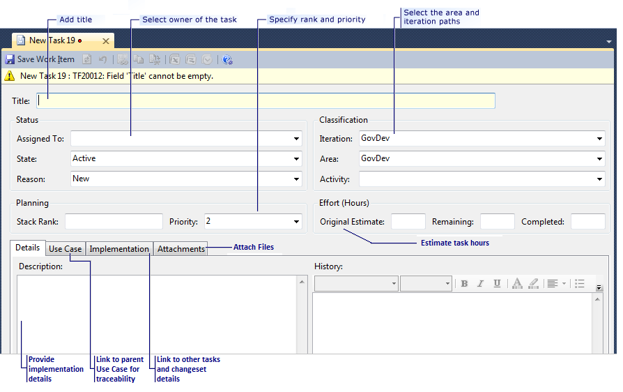
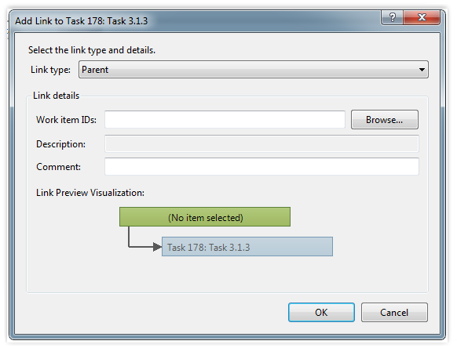
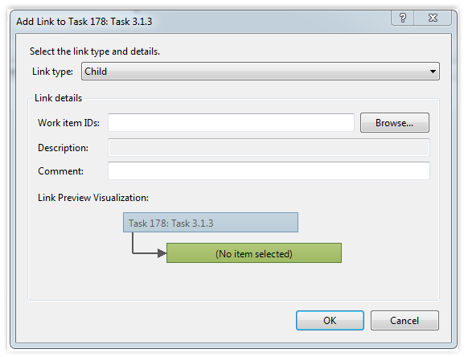
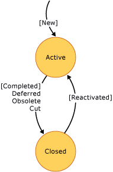

You can learn how to fill in the details of a task work item in this topic. For information about what tasks are and how they are used in agile processes, see Product Backlog. For information about how to create a task work item, see Work Items and Workflow (GovDev).
|
In this topic |
Related topics |
|---|---|
|
Agile Processes Workbooks GovDev Reports (Reporting Services) Field Reference |
Required Permissions
To view a task, you must be a member of the Readers group or your View work items in this node must be set to Allow. To create or modify a task, you must be a member of the Contributors group or your Edit work items in this node permissions must be set to Allow. For more information, see Managing Permissions.
 Defining
a Task
Defining
a Task
A task communicates the need to do some work. Each team member can define tasks to represent the work that they need to accomplish. For example, a developer can define development tasks to implement Use Cases. A tester can define test tasks to assign the job of writing and running test cases. A task can also be used to signal regressions or to suggest that exploratory testing should be performed. Also, a team member can define a task to represent generic work for the project.
The form for task work items stores data in the fields and tabs that are shown in the following illustration:
When you define a task, all fields are optional except for Title.
To define a single task
-
In the top section of the work item form for a task, specify one or more of the following types of information:
-
In Title, verify and, if necessary, update the title to better define the area of work to be accomplished.
The title provides a concise overview of the task to be completed. The title should be descriptive enough to allow the team to understand what area of the product is affected and how it is affected.
-
In the Activity list, click the type of activity that represents the task to be accomplished.
-
In the Assigned To list, click the appropriate owner for the task.
 Note
Note
You can assign work items only to members of the Contributors group.
If you leave the task unassigned, it is automatically assigned to you.
Note
You can assign only one resource to each task. If more than one team member will work on the same task, divide it into separate tasks or subtasks, and assign a single team member to each.
-
In Rank, type a number or leave this field blank.
In general, teams work on items that have a lower value in this field first.
-
In the Priority list, click a value to specify the importance of the task on a scale of 1 to 4, 1 being most important.
The default value is 2.
-
In the Area and Iteration lists, click the appropriate area and iteration, or leave these fields blank to be assigned later during a planning meeting.
Note
The project administrator for each team project defines area and iteration paths for that project so that the team can track progress by those designations. For more information, see Create and Modify Areas and Iterations.
-
In Original Estimate, type a number that represents the hours of work that the task will take to complete.
 Important
Important
If you subdivide a task into subtasks, specify hours for the subtasks only. In Team Foundation reports, hours that you define for the subtask are rolled up as summary values for the parent task and the Use Case. If you assign hours in both place, hours will be counted twice in those reports that track hours. For information about how to correct this condition, see Address Inaccuracies Published for Summary Values.
-
In Completed, type 0 to specify that no work has been completed.
-
In Remaining, type the same value that you specified in Original Estimate.
If your team is using the Original Estimate, Completed, and Remaining fields to determine team capacity, burndown, and burn rate, you will want to update the Completed and Remaining fields as you perform the work. Also, these fields are synchronized with Office Project, which you can use to schedule the project plan. For more information, see Scheduling Tasks and Assigning Resources Using Microsoft Project.
-
-
(Optional) On the Details tab, specify the following types of information:
-
In Description, type as much detail as you want to describe the work to be performed.
-
In History, type comments that you want to capture as part of the historical record. Every time that a team member updates the work item, its history shows the date of the change, the team member who made the change, and the fields that changed.
-
-
(Optional) Link the task to other work items, such as Use Cases of child Tasks. For more information about these activities, see the following sections in this topic:
-
Click
 Save Work Item. Note
Save Work Item. Note
After you save the task, the identifier appears under the work item toolbar.
Linking
a Task to a Use Case
You link tasks to a use case to track the progress of work that has occurred to complete that use case. After you define a task, you can link it to the Use Case that it implements by using the following procedure.
To link a task to an existing Use Case
-
On the Implementation tab, click
 Link to.
Link to. The Add Link to Task dialog box opens.
Leave the Link Type set to Parent, which is the only type of link that is supported for links that you add on the Implementation tab.
-
Click Browse.
The Choose Linked Work Items dialog box appears.

-
In Saved query, click the Use Case Planning or Open Use Cases team queries, and then click Find.
-
Select the check box next to the Use Case you want to link to the task.
For more information, see Find Work Items to Link or Import.
-
(Optional) In Comment, type a description for the tasks to which you are linking.
-
Click OK.
-
Click
Save Work Item. Note
Both the task and the Use Case that you linked are updated.
Linking
a Task to a Child Task
You link tasks to a use case to track the progress of work that has occurred to complete that use case. After you define a task, you can link it to the Use Case that it implements by using the following procedure.
To link a task to an existing Task
-
On the Implementation tab, click
Link to. The Add Link to Task dialog box opens.
Leave the Link Type set to Child links that you add on the Implementation tab.
-
Click Browse.
The Choose Linked Work Items dialog box appears.
-
In Saved query, click the Active Tasks team query, and then click Find.
-
Select the check box next to the Use Case you want to link to the task.
For more information, see Find Work Items to Link or Import.
-
(Optional) In Comment, type a description for the tasks to which you are linking.
-
Click OK.
-
Click
Save Work Item. Note
Both the task and the Use Case that you linked are updated.
Adding
Details and Attachments to a Task
You can add information to a task that supports its implementation. You add details to tasks in the following ways:
-
Type information in the Description or History field.
-
Attach a file.
For example, you can attach an e-mail thread, a document, an image, a log file, or another type of file.
-
Add a hyperlink to a Web site or to a file that is stored on a server or Web site.
To add details to a task
-
Click the Details tab.
-
In Description, type information.
-
In History, type information.
You can format information to provide emphasis or capture a bulleted list. For more information, see Titles, IDs, Descriptions, and History (GovDev).
-
Click
Save Work Item.
To add an attachment to a task
-
On the Attachments tab, perform one of the following actions:
-
Drag a file into the attachment area.
-
Click
 or press CTRL-V to paste a file that you have copied.
or press CTRL-V to paste a file that you have copied. -
Click
 Add, and then click Browse. In the
Attachment dialog box, type or browse to the name of the
file that you want to attach.
Add, and then click Browse. In the
Attachment dialog box, type or browse to the name of the
file that you want to attach. (Optional) In the Comment box, you can optionally type additional information about the attachment. To close the Attachment dialog box, click OK.
-
-
Click
Save Work Item.
Closing
Completed Tasks
When you complete a task, you change its State from Activeto Closedstate.
To close a task
-
Open the task.
-
In the State list, click Closed.
-
In the Reason list, click the reason why you are closing the task.
For more information about each option in the Reason list, see Active to Closedlater in this topic.
-
Click
Save Work Item.
|
Typical workflow progression:
Additional workflow transitions states:
|
Task State Diagram  |
Active
The task remains in the active state as long as it is being implemented. The team member who has been assigned the task tracks the level of effort of the task by updating it with Completed and Remaining hours.
From Active to Closed
When you close a task, you must specify one of the following reasons why you are closing it:
|
Reason |
When to use |
Additional actions to take |
|---|---|---|
|
Completed (default) |
When you complete the work that was required to implement the functionality that was defined in the task. |
None. |
|
Deferred |
When the work cannot be implemented in the current iteration. You might defer a task because the team does not have enough time or because blocking issues prevent work. |
Update the Iteration field to the correct iteration in which the task will be implemented, or set it to the backlog. |
|
Obsolete |
When the work the task represents no longer contributes to completion of the product. |
None. |
|
Cut |
When the functionality for the task is removed from the product. |
None. |
The following data fields are automatically captured during the transition from active to closed:
-
Closed By: Name of the team member who closed the work item.
-
Closed Date: Date and time when the work item was closed, as recorded by the server clock.
-
State Change Date: Date and time when the state of the work item was changed.
Closed
Any team member can reactivate a closed task if it comes back into scope.
From Closed to Active
When you reactivate a task, the Assigned To field is automatically populated with the name of the team member who closed the task. The Reason field is set to Reactivated.
|
Reason |
When to use |
Additional actions to take |
|---|---|---|
|
Reactivated |
When the task is now necessary because of a change in functionality. |
Review the information and linked work items that are defined for the task to determine whether any data must be updated. |
The following data is automatically captured during the transition from closed to active:
-
Activated By: Name of the team member who reactivated the work item.
-
Activated Date: Date and time when the work item was reactivated, as recorded by the server clock.
-
State Change Date: Date and time when the state of the work item was changed.